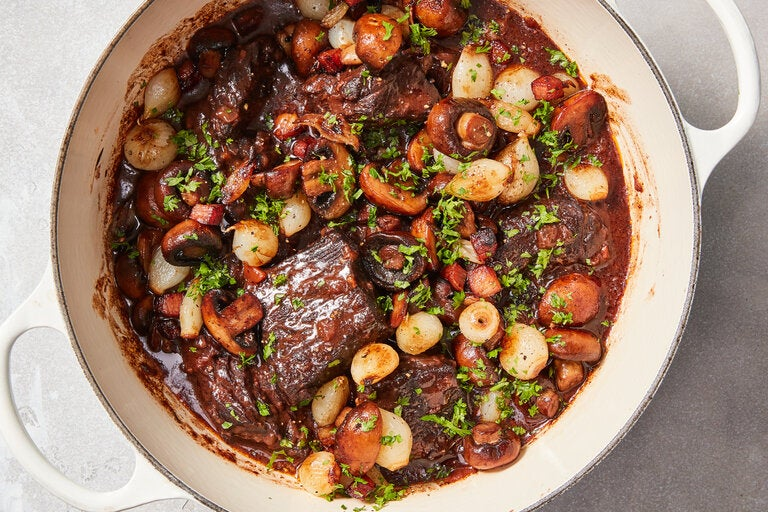

Beef Bourguignon

Description
This classic French dish is composed of stewing beef braised in a broth of mushrooms, vegetables, and red wine. A simple concept at heart, but the results boast complex, robust flavors, thanks in no small part to the addition of the wine.
Ingredients
- 3 lb Beef Chuck (or other Stewing Beef), Cubed and Patted Dry
- 2 1/4 tspn Kosher Salt
- 1/2 tspn Freshly Ground Black Pepper
- 5 oz Lardons (Pancetta or Bacon), Diced
- 1 Onion
- 1 Large Carrot, Sliced
- 2 Garlic Cloves, Minced
- 1 tsp Tomato Paste
- 2 tbsp Flour
- 750ml Red Wine (Pinot Noir is Traditionally Used)
- 1 Large Bay Leaf
- 1 Large Sprig of Thyme
- 8 oz White Mushrooms (Halved if Large)
- 1 tbsp Olive Oil
- A Pinch of Sugar
- Chopped Parsley
Steps
- Season beef with 2 teaspoons of salt and 1/2 a teaspoon of pepper. Set aside for at least 30 minutes at room temperature, or chill in the refrigerator for up to 24 hours.
- In a large Dutch oven or heavy-bottomed pot with a tightfitting lid, cook lardons over medium-low heat until fat is rendered and lardons are browned and crisp, about 10 to 15 minutes. Transfer with a slotted spoon to a paper towel-lined plate. Reserve fat in pot.
- Heat oven to 350 degrees. Raise heat under pot to medium-high and cook until fat is starting to smoke. Lay half the beef cubes in a single layer in the pot, leaving space between pieces. Cook until well browned on all sides, 10 to 15 minutes; transfer pieces to a plate as they brown. Repeat with remaining beef.
- Reduce heat, if necessary, to prevent burning. Stir in onion, carrot and remaining ¼ teaspoon salt and cook until soft, about 10 minutes, stirring occasionally.
- Stir in garlic and tomato paste, and cook for 1 minute. Stir in flour, cook for 1 minute, then add wine, bay leaf and thyme, scraping up brown bits at bottom of pot. Add browned beef and half the cooked lardons back to pot, cover, and transfer to oven. Let cook until beef is very tender, about 1½ hours, turning meat halfway through.
- Meanwhile, in a large skillet set over high heat, combine pearl onions, mushrooms, ¼ cup water, the olive oil and a pinch each of salt, pepper and sugar. Bring to a simmer, then cover and reduce heat to medium, cooking for 15 minutes. Uncover, raise heat to high, and cook, tossing frequently, until vegetables are well browned, 5 to 7 minutes.
- To serve, scatter onions and mushrooms and remaining cooked lardons over stew, then top with parsley.